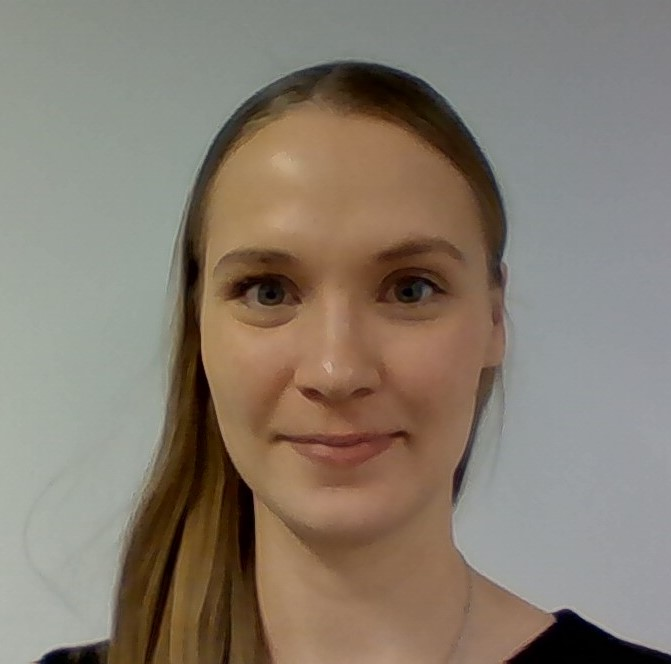
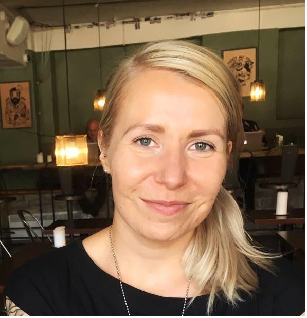

Hello world!
Olemme juuri aloittaneet Academyn JavaScript opintomme.
Mitä on Accelerated Learning?
Accelerated Learning on nopea tie uuteen ammattiin aktiivisille ja kunnianhimoisille ihmisille, joilla on kyky omaksua uutta tietoa tehokkaasti. Koulutusmalli keskittyy nopeatempoiseen käytännön oppimiseen aktiivisen tiimityöskentelyn ja jatkuvan palautteenannon kautta. Koulutus perustuu konkreettisiin tehtäviin, jotka ovat relevantteja tulevissa tehtävissä. Tämä tekee oppimisprosessista erittäin tehokkaan ja konsulttimme pystyvät työskentelemään junior IT-konsultin tehtävissä heti ensimmäisestä päivästä lähtien.
Alla lyhyt esittely ryhmämme jäsenistä:
Salainen taitoni on porkkanakakun teko. Haastavinta ennakko-opinnoissa oli ymmärtää miten callbackit toimii.
Satu Immonen

Innokkaasti uudelle uralle lähtenyt viestijä, tuleva Javascript-velho. Haasteita aiheuttaa vielä event handlerit ja callbackit. Salainen aseeni on tarkka oikolukeminen!
Sanna Launonen
Haasteena oli, että sitä mukaa, kun esiopinnoissa oppi uuden moduulin asiat, edelliset opitut asiat alkoivat haihtua mielestä - uutta tietoa tuli niin paljon. Salainen kykyni on löytää halpoja lentoja hauskoihin kohteisiin.
Laura Muttilainen
Salainen taitoni: Google. Haastavinta ennakko-opinnoissa oli ajan puute, Node.js.
Riina Moilanen

IT-osaamista viime vuosituhannelta ja kaikki ne taidot ovat julkisia. :D Vaikeinta oli malttaa nukkua.
Jukka Alkunen